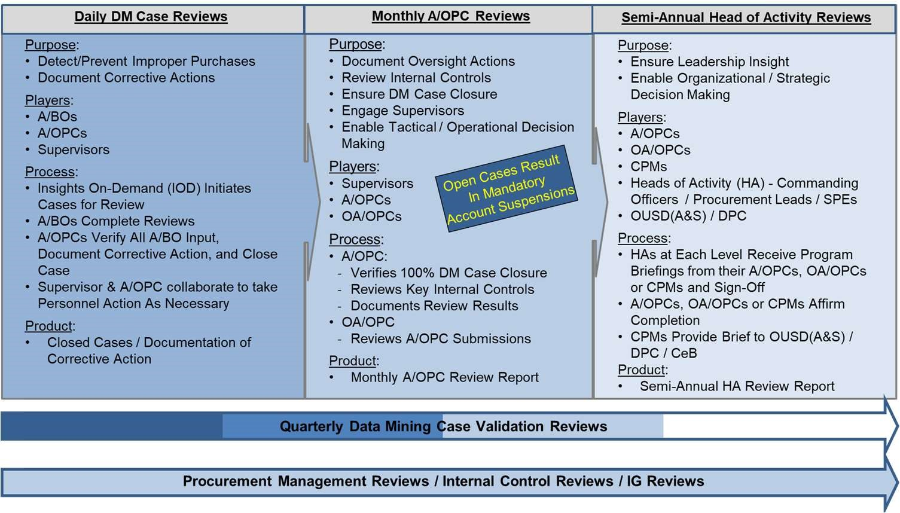

11-4. Data Mining Case Review and Closure
DM case reviews enable documentation of any identified findings and corrective actions taken. DM case reviews include both system-generated cases and manually-added cases, which may be opened at management’s discretion. Cases must be opened for each finding and disciplinary category determination independently identified during compliance reviews. Monthly A/OPC Reviews are conducted to promote and measure compliance with purchasing and management internal controls and provide reasonable assurance of the effectiveness of these controls to mitigate program risk. Semi-Annual HA Reviews are conducted to ensure adherence to internal controls and facilitate senior management’s awareness of their GPC program’s health, and to help them promote the interdisciplinary communication necessary for successful GPC program operations. The use of an automated data mining system enables the Army to fulfill the 10 USC 4754 requirement to “use effective systems, techniques, and technologies to prevent or identify improper purchases.”
Figure 11-1: Three-Pronged Oversight Review Process

Integrated Solutions Team
a. DM Case Management. Oversight Systems’ IOD DM capability evaluates each transaction against a set of tiered business rules to identify high-risk transactions. Tier 1 rules are mandatory and applicable to all DoD purchase cards. Tier 2 rules are mandatory rules that can be tailored as necessary at the local level. DM cases can be system-generated or manually generated. The system generates a DM case whenever a business rule is broken. GPC program officials are required to manually create cases for each finding and disciplinary category determination they independently identify during their reviews. Each case is adjudicated to determine if the transaction is to be classified under one of five disciplinary categories standardized in compliance with the DPC memo “Final Governmentwide Commercial Purchase Card Disciplinary Category Definitions Guidance,” January 27, 2020. Disputes are also categorized as determinations.
b. Tier 2 Tailoring. Tier 2 business rules are tailorable to the cardholder level to meet the Army’s organizational needs. Tailoring must be consistent with requirements in the DoD Charge Card Guidebook. As part of the SAHAR process, Heads of Activity (HAs) are required to validate that any Tier 2 Tailoring of DM business rules are implemented appropriately. For more information, refer to GPC one-pager 3OP034, “Tier 2 Tailoring in Insights on Demand (IOD)” on the DPC GPC website. To properly manage program risk for these potentially high-risk transactions, IOD automatically selects a random sample of 1% of these Tier 2 “auto closed” cases and assigns them for adjudication (“1% Random Reopen”). The IST reviews Tier 2 Tailoring data sets and trends and considers methodology changes based on its findings.
c. Case Assignment and Review Process.
1) When a transaction is flagged for review, IOD generates a case and assigns it to the primary BO.
2) The BO reviews the CH’s file documentation in the bank’s EAS. The BO then locates the case in IOD and inputs requested data.
3) Once the BO has submitted their review, IOD assigns the case to the Level 4 A/OPC. The Level 4 A/OPC reviews the CH’s file documentation, inputs detailed comments regarding the purchase, identifies the applicable finding, and closes the case in IOD. The comments should provide information regarding the transaction and a detailed explanation of any findings. For administrative findings, the comments must state what documents or signatures were missing.
d. Case Review Timeframe. Cases must be resolved within 30 calendar days of the billing cycle end date.
1) Billing officials must complete their review of assigned IOD cases within 15 calendar days of the billing cycle end date. Billing officials are recommended to review IOD cases when certifying their monthly statement. A/OPCs may suspend the managing account if IOD cases are not reviewed within 15 days.
2) Level 4 A/OPCs must close cases within 30 calendar days of the billing cycle end date. Level 3 A/OPCs may notify the Level 4 A/OPC’s chain of command if cases are not closed within the required timeframe.
3) A/OPCs may add stricter controls regarding the timeline for completing IOD cases.
e. At their discretion, A/OPCs may flag additional transactions for review within IOD. Billing officials are required to review these additional cases as part of the normal case review process and timeline.
Table 11-1: Daily Data Mining Case Review Cycle
| Action | DM Case Review Cycle Milestones | Compliance Mechanism |
|---|---|---|
| IOD assigns cases daily for review | Throughout the billing cycle | Not applicable |
| Billing officials complete their review of assigned cases |
Billing officials should complete reviews throughout the billing cycle (rather than waiting until the end of the month) to promote timely resolution (e.g., transaction dispute, CH retraining). Reviews should be completed within 5 days of the billing cycle end date. Billing officials must complete reviews within 15 calendar days of the billing cycle end date. Note: Any case the A/OPC refers back to the BO for additional review may require action through day 30. |
Not applicable |
| A/OPCs review and close assigned cases |
A/OPCs must complete reviews within 30 calendar days of the billing cycle end date. Note: Any case the OA/OPC refers back to the BO for additional review may require action through day 30. |
A/OPCs may suspend managing accounts with open DM cases 15 days after billing cycle end date. OA/OPCs must suspend managing accounts with open cases 30 days after the billing cycle end date. |